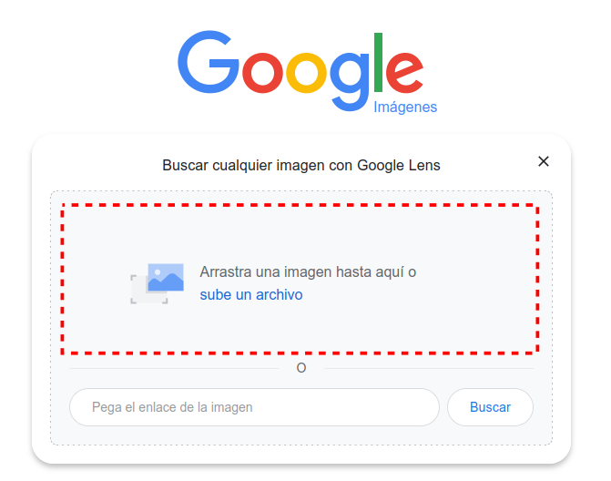
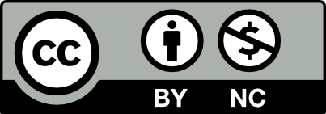

Retoque fotográfico. Crear y compartir, una forma de vivir
SESIÓN 1. Propiedad Intelectual y Licencias de Uso. Comparte legal.
A la hora de dar un aspecto visual atractivo a nuestras páginas web, es muy importante el uso de imágenes. ¿Y de dónde las obtenemos?. Seguro que estás pensando, "Fácil, sólo hay que buscar en Google". Pero eso sería un gran error, ya que la mayoría de las imágenes que vemos día a día en Internet, pertenecen a personas o empresas que tienen derechos sobre ellas.
Antes de empezar a incluir imágenes en nuestras páginas web, debemos conocer su procedencia y si su propietario ha dado permiso para utilizarlas. Así que antes de utilizar imágenes, debemos conocer los conceptos básicos sobre la propiedad intelectual y las licencias de uso.
Puede parecer que hablar de propiedad intelectual en un módulo de Diseño Web está de más, sin embargo es un tema complementario de gran importancia, ya que sin una protección adecuada de las creaciones humanas, quizás no merecería la pena que hicieras tus páginas web, porque alguien podría copiarla y decir que es suya.
La propiedad intelectual y las licencias de uso, protegen a los creadores sobre usos indebidos que se puedan hacer de sus obras. También te protegen a tí como futuro creador de contenidos en tus páginas web.
1. Ley de propiedad intelectual
La ley de propiedad intelectual regula y protege en España los derechos que un autor tiene sobre la obra que ha creado.
A continuación puedes informarte sobre qué son estos derechos y qué tipos de obras protege.
Derechos de autor
Descubre, en el siguiente vídeo, qué son los derechos de autor y algunos detalles interesantes de la ley de propiedad intelectual que afecta al uso que se puede hacer de las obras que crean otras personas.
Dominio Público
Los derechos de explotación de las obras tiene una validez temporal limitada, como ya vimos anteriormente.
Cuando se cumple el plazo correspondiente, las obras pasan al dominio público, esto significa que cualquiera puede usarlas de forma libre sin tener que pagar derechos de explotación.
Obras protegidas
La ley de propiedad intelectual incluye un amplio catálogo de tipos de obras que están bajo su protección, tanto originales como derivadas.
Entre las originales están los textos, las composiciones musicales, los programas informáticos, los diseños de arquitectura e ingeniería, gráficos y mapas, colecciones y bases de datos y obras plásticas audiovisuales y dramáticas.
Entre las derivadas están las traducciones, adaptaciones, actualizaciones, revisiones, resúmenes, compendios y arreglos musicales.
En la siguiente imagen puedes ver un cuadro resumen de todas ellas.
Lectura facilitada
El autor de una creación intelectual (literaria, artística o científica) es el dueño de la misma.
La obra es de su propiedad y eso genera una serie de derechos que en España están recogidos en la Ley de Propiedad Intelectual, que reconoce dos tipos:
Derechos morales:
No prescriben ni se pueden transmitir
El autor decide si se divulga su creación y cómo.
Establece cómo aparecerá su nombre.
Puede exigir que se mantenga la integridad de la obra y que se reconozca su autoría. Y acceder al ejemplar único o raro de la misma.
Derechos de explotación:
Pueden transferirse a otras personas o entidades previa autorización del autor.
Incluyen:
La reproducción: hacer copias en otros soportes.
La distribución de ejemplares físicos en diferentes formatos.
La comunicación pública: difusión mediante la realización de actos o a través de las nuevas tecnologías.
Y la transformación en otras obras: resúmenes, versiones, traducciones…
Duración: 70 años a contar desde la muerte del autor (80 si se produjo antes de 1987). Después las obras pasan a dominio público.
Hay unos límites establecidos para preservar el interés público:
Se pueden utilizar breves fragmentos con fines docentes o de investigación, citando la fuente.
Copia privada, con medios propios, para hacer un uso personal de la obra.
Copia para facilitar el uso a personas con discapacidad.
Utilización de fragmentos o imágenes para la enseñanza o la investigación (mencionando la fuente).
En bibliotecas, se pueden prestar obras y hacer copias para la investigación o la conservación.
Todo ello se aplica también a cualquier creación que se encuentra en Internet:
imágenes, música, gráficos, audiovisuales etc. están sujetos a esta legislación que protege los derechos de autor, aunque accedamos a ellos sin restricciones.
Dominio Público:
El dominio público es la situación en la que quedan las obras al expirar el plazo de protección de los derechos de explotación (70 años a contar desde la muerte del autor, 80 si se produjo antes de 1987).
Las obras pueden ser explotadas siempre que se respeten los derechos morales.
El convenio de Berna es un tratado internacional adoptado en 1886 que trata de la protección de las obras y los derechos de los autores.
Aunque cada país tenga su normativa en derechos de autor, se deben adaptar a este convenio.
¿Cómo podemos identificar las obras de dominio público?
Identifica el autor para conocer las fechas de su nacimiento y fallecimiento, debemos saber el país dónde se aplican los derechos porque cada país tiene su propia cantidad de años para la expiración.
Si no se conoce el autor, la fecha podrá guiarte para saber si es de dominio público.
Examina la obra en busca de un aviso de propiedad intelectual.
Kardia dice ¿Entonces...?
Como los derechos de Mickey Mouse expiraron en 2024... ¿Podría hacer mis propios cómics o camisetas con el personaje?
Dado que los derechos han expirado en 2024, podrás utilizar al personaje.
Pero ¡ojo!, expira la versión de 1928, la primera aparición de Mickey Mouse en el corto de animación Steamboat Willie.
Kardia dice ¿Sabías que...?
La Conferencia General de la UNESCO (United Nations Educational, Scientific and Cultural Organization o, en español, Organización de las Naciones Unidas para la Educación, la Ciencia y la Cultura) declaró en 1995 que el día 23 de abril (en honor al día de 1616 en que se ha acordado que fallecieron Cervantes, Garcilaso de la Vega y Shakespeare) se celebre el día mundial del libro y los derechos de autor.
2. TAREA 1 - Cuestionario sobre Derechos de Autor
A continuación vas a encontrar una serie de preguntas acerca de los derechos de autor según se recogen en la Ley de Propiedad Intelectual.
Selecciona las respuestas correctas y pulsa sobre el botón "responder". Debes hacer de forma individual.
Una vez hayas terminado, haz una captura de pantalla del resultado del cuestionario, y súbela a la tarea de Classroom "TAREA 1 - Cuestionario sobre Derechos de Autor" de la Unidad.
Recuerda que debes poner tu nombre en la barra de direcciones del navegador, y hacer la captura de toda la pantalla.
Si no te ha salido muy bien la primera vez, puedes volver a intentarlo.
Su navegador no es compatible con esta herramienta.
3. Licencias para los derechos de explotación
Como has visto antes, cada vez que alguien crea algo, adquiere sobre su obra unos determinados derechos de explotación.
La forma de regular esos derechos se hace a través del empleo de las licencias.
El tipo de licencia que se utilice influirá en la manera de darle difusión y los usuarios están obligados por ley a respetarla. En caso contrario estarían cometiendo un delito de piratería que tiene graves consecuencias sobre la creación de contenidos originales.
Clasificación general
En general se pueden considerar cuatro grandes tipos de licencias para regular los derechos de explotación de una obra:
El copyright supone el derecho de explotación exclusivo por parte del autor debiendo, cualquier otra persona o entidad, llegar a un acuerdo privado con él si deseara utilizarla. Se representa con una C.
El copyleft permite a cualquier usuario la libre utilización de la obra siempre que comparta sus versiones bajo este mismo tipo de licencia. Se representa con una C invertida.
Las Creative Commons son un conjunto de licencias para la regulación de la libre utilización de la obra con la posible imposición de ciertas restricciones, compatibles con los derechos de explotación, que puedes ver en la siguiente pestaña de este punto. Se representa con una doble C (CC). Se puede considerar que deriva de la anterior aportando la posibilidad de decidir determinados aspectos de la protección.
El dominio público son obras de libre acceso y utilización que por tanto no tienen restricciones de explotación. La obra puede alcanzar este estado bien porque hayan caducado los derechos de explotación o porque se haya declarado expresamente. Se representa con una C tachada o mediante la doble C con un cero (CC0).
En la siguiente imagen puedes encontrar cada tipo de licencia ordenado de mayor a menor restricción de derechos de explotación.
Vídeo licencias
En el siguiente vídeo se explican los tipos de licencias que se pueden utilizar y describe a qué obliga cada tipo.
Alta licencias CC
Las licencias Creative Commons (CC) permiten liberalizar los derechos de explotación en las condiciones que se definan según lo que has podido ver en el vídeo anterior.
Ahora es el momento de que aprendas cómo puedes crear tú mismo licencias CC para que las incluyas en tus obras digitales. Para ello solo tienes que seguir las instrucciones que encontrarás en el siguiente vídeo.
Imágenes CC
Cuando quieres ilustrar un trabajo que estás realizando es habitual que recurras a buscar en Internet imágenes que puedas aprovechar.
Como con cualquier otro contenido, siempre puedes añadir al criterio de búsqueda la palabra "libre", "gratis" u otra similar. Pero quizás no sepas que se puede filtrar la búsqueda para que te muestre las que tienen una licencia Creative Commons (CC).
Es muy sencillo, lo puedes ver en la siguiente imagen que te enseña con un ejemplo qué hacer.
Como puedes observar, se filtra la búsqueda por imágenes y se clica la opción de "herramientas" donde aparece una opción de "derechos de uso" que permite seleccionar "licencias Creative Commons".
Otra opción de gran interés consiste en recurrir un buscador de contenido Creative Commons y de dominio público como el que tienes referenciado en este enlace.
Es tan sencillo de usar como poner tu criterio de búsqueda y pinchar en buscar (search).
¿Qué derechos tiene esta imagen?
Cuando estamos buscando imágenes, sólo tenemos que filtrar para que aparezcan aquellas que tienen las licencias que nos interesan. Pero, ¿y si ya tenemos una imagen que nos gusta y no sabemos que derechos tiene?
Google también tiene una búsqueda por imágenes, en lugar de escribir un texto para buscar en la web, subes una imagen. El resultado de esta búsqueda son las páginas en las que aparece la imagen, o imágenes similares.
Si hacemos una búsqueda por imagen, podemos identificar la web de la que procede y comprobar el tipo de licencia que tiene.
Veamos el proceso paso a paso:
Escribimos la dirección en el navegador https://images.google.com/ o escribimos en Google "Google Images".
Nos aparecerá la siguiente página, pulsamos sobre el icono de la cámara de fotos:
3. A continuación arrastramos la imagen hasta la zona marcada, o pulsamos en "sube un archivo" para buscar la imagen en nuestro ordenador. Cuando estemos listos pulsamos buscar.

4. Nos saldrá una página con resultados parecidos a la imagen que hemos usado para la búsqueda. Para buscar la imagen exacta, pulsamos sobre "Buscar fuente de la imagen".
5. Ahora ya podemos ver todas las webs en las que aparece la imagen. Trataremos de buscar en ellas información sobre la licencia.
No siempre vamos a encontrar la información sobre la licencia.
Si no encontramos información y no estamos seguros, no usaremos la imagen.
Si nos aparece información contradictoria sobre la licencia, siempre nos quedaremos con la más restrictiva, para asegurarnos que no vulneramos los derechos del autor original.
Lectura facilitada
Toda creación está sujeta a derechos de autor.
Hay tres tipos de licencias:
Copyright:Todos los derechos reservados. Pide permiso.
CC Creative Commons:Algunos derechos reservados. El autor decide los derechos que va a permitir.
Copyleft: Dominio público. Se puede usar sin permiso.
Tipos de licencias Creative Commons
Reconocimiento. Se ceden todos los derechos, sólo se pide reconocimiento.
Reconocimiento y no derivados. Se debe reconocer al autor original y no se puede modificar la obra ni crear derivados.
 Reconocimiento y no comercial. Se debe reconocer al autor original y no se puede obtener beneficio económico de la obra, aunque sea sobre una modificación de ésta. Según el país, se representa con un símbolo de Euro o Dólar.
Reconocimiento y compartir igual. Se debe citar al autor y las obras derivadas tienen que compartirse con la misma licencia.
Reconocimiento, no comercial, compartir igual. Se debe citar al autor, no se permite obtener beneficio económico, y las obras derivadas deben llevar esta misma licencia.
Reconocimiento, no comercial, no derivados. Se debe citar al autor, no se puede obtener beneficio económico, ni modificar la obra.
Dominio público. Libertad absoluta para usar la obra. También se representa con una C tachada.
Con frecuencia usamos vídeos fotos música incluso texto para nuestras redes sociales o nuestros sitios web así que debemos saber la manera de utilizarlos cumpliendo con las licencias que sus autores les dan y no estaremos realizando un delito contra la propiedad intelectual del autor.
Cuando haces un trabajo y lo quieres compartir, puedes elegir la licencia que mejor se ajusta a tus necesidades en: https://creativecommons.org/choose/
4. ¿Qué licencia necesitas?
Cada tipo de licencia se puede utilizar en unas condiciones específicas. Identifica qué licencias son apropiadas en cada caso.
Tienes dos tareas distintas con dificultad creciente.
La TAREA 2 presenta la definición de varias licencias y debes emparejarlas con su correspondiente logo. Debéis trabajar de forma individual.
Una vez hayas terminado, haz una captura de pantalla del resultado del cuestionario, y súbela a la tarea "TAREA 2 - Empareja las licencias Creative Commons y sus usos." de Moodle.
La TAREA 3 os mostrará situaciones en las que debes justificar la licencia a usar por un autor o un usuario, según sus necesidades. Debéis trabajar en parejas.
Una vez hayáis terminado, haced una captura de pantalla del resultado de la tarea interactiva, y subidla a la tarea "TAREA 3 - Justifica la elección de una licencia" de Moodle.
Recuerda que debéis poner vuestros nombres en la barra de direcciones del navegador, y hacer la captura de toda la pantalla.
Si no os ha salido muy bien la primera vez, podéis volver a intentarlo.
5. TAREA 2 - Empareja
A continuación puedes leer en cada cuadro la descripción de las características de una licencia Creative Commons.
Verás que también aparecen representados los iconos que identifican cada tipo de licencia Creative Commons.
Tu misión consiste en asignar a cada descripción el icono de la licencia que le corresponde, arrastrándolo y soltándolo sobre cada descripción.
6. TAREA 3 - Justifica
Poneros en pareja y resolved justificadamente qué licencia sería la adecuada para los siguientes casos que se describen a continuación.
Buscad el icono que le corresponde y colocadlo junto al tipo de licencia que hayáis elegido.
Recordad que a partir de ahora, todas las imágenes que uséis en páginas web, deben tener los derechos adecuados para que podáis usarlas.
Es condición imprescindible que las imágenes utilizadas en las tareas de esta unidad tengan una licencia adecuada. Dicha licencia os debe permitir utilizarlas libremente reconociendo su autoría en todos los casos.
¿Sabes referenciar una imagen?
Si no sabes cómo hacer la referencia de una imagen échale un vistazo al apartado de créditos de este recurso y encontrarás montones de ejemplos de cómo hacerlo.
Como mínimo tienes que identificar lo siguiente:
Título.
Identificación de la fuente de la que se ha obtenido.
Autoría.
Tipo de licencia.
Lumen dice ¿Qué tal algo de ayuda con la licencia?
Para crear la licencia Creative Commons podéis utilizar este enlace a la página oficial y seguir las instrucciones que se dan en el vídeo que aparece un poco más arriba, en la pestaña de alta de licencias del punto "3. Licencias para los derechos de explotación". Tienes una ayuda visual del proceso, si haces clic en el icono del ojo más abajo.